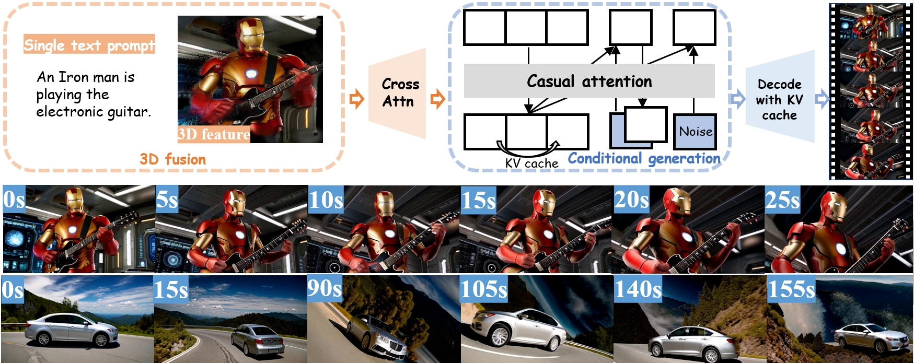

Producing long, coherent video sequences with stable 3D structure remains a major challenge, particularly in streaming scenarios. Motivated by this, we introduce Endless World, a real-time framework for infinite, 3D-consistent video this http URL support infinite video generation, we introduce a conditional autoregressive training strategy that aligns newly generated content with existing video frames. This design preserves long-range dependencies while remaining computationally efficient, enabling real-time inference on a single GPU without additional training this http URL, our Endless World integrates global 3D-aware attention to provide continuous geometric guidance across time. Our 3D injection mechanism enforces physical plausibility and geometric consistency throughout extended sequences, addressing key challenges in long-horizon and dynamic scene this http URL experiments demonstrate that Endless World produces long, stable, and visually coherent videos, achieving competitive or superior performance to existing methods in both visual fidelity and spatial consistency.
Method Pipeline

Endless World features two core modules, 3D fusion and conditional auto-regressive video generation, which together enable the creation of 3D-consistent videos of unlimited length with stable and realistic visual quality.
BibTeX Citation
@misc{zhang2025endlessworldrealtime3daware,
title={Endless World: Real-Time 3D-Aware Long Video Generation},
author={Ke Zhang and Yiqun Mei and Jiacong Xu and Vishal M. Patel},
year={2025},
eprint={2512.12430},
archivePrefix={arXiv},
primaryClass={cs.CV},
url={https://arxiv.org/abs/2512.12430},
}